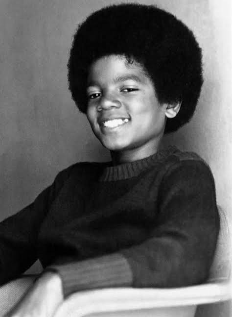
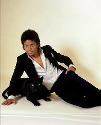
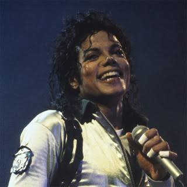
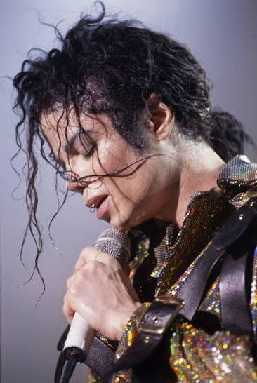
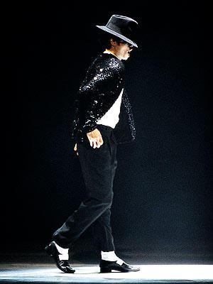

👦 Início da carreira
Michael começou sua carreira ainda criança no Jackson 5, ao lado dos irmãos. Destacou-se como vocalista principal com seu talento para cantar e dançar.

⭐ Sucesso com o Jackson 5
O grupo conquistou grande popularidade com músicas como “I Want You Back”, “ABC” e “I'll Be There”. Michael rapidamente se tornou o integrante de maior destaque.

🎤 Carreira solo
Michael iniciou sua carreira solo ainda jovem e lançou sucessos como “Don’t Stop ’Til You Get Enough” e “Rock with You”. Seu estilo começou a ganhar reconhecimento mundial.

💿 Álbum Thriller
Em 1982, lançou “Thriller”, um dos álbuns mais importantes de sua carreira. Músicas como “Billie Jean”, “Beat It” e “Thriller” se tornaram grandes sucessos.

🕺 Dança e Moonwalk
Michael revolucionou a dança na música, tornando o *Moonwalk* um de seus movimentos mais famosos. Suas apresentações ficaram conhecidas pelas coreografias elaboradas.
🎬 Videoclipes inovadores
Seus videoclipes ganharam características de grandes produções cinematográficas. “Thriller”, por exemplo, ficou famoso por sua história, coreografia e efeitos visuais.
🌎 Reconhecimento mundial
Ao longo da carreira, Michael conquistou fãs em diversos países e recebeu inúmeros prêmios. Sucessos como “Bad”,“Smooth Criminal” e “Black or White” marcaram sua trajetória.
🏆 Legado
Michael Jackson ficou conhecido mundialmente como o “Rei do Pop”. Sua música, dança, videoclipes e performances continuam influenciando artistas e fazendo sucesso entre diferentes gerações.